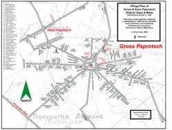

Below you will find a variety of research tips, clues, and other resources specific to this parish. These will differ from parish to parish depending on what kind of material is submitted by our members. Some images if applicable will be enlarged if you click on them.
|  | Map of the villages of Paproc Male and Paproc Duze (Gross und Klein Paprotsch) showing residents c.1939. Click on the image to open a pdf version that can be printed. Keep in mind that maps of this type are based on the memory of people who once lived there. Therefore, such maps may not be 100% accurate. |
| Germanic surnames on the above map include: Bauer, Bülo, Busch, Buse, Driegert, Eland, Engel, Fester, Gissing, Göritz, Görtz, Gottschalk, Hafemann, Irrgang, Klas, Knorr, Kormann, Krebs, Krüger, Liebrrenz, Penk, Rogge, Romei, Rosin, Rossol, Schulz, Schütz, Spitz, Steinmeier, Taufenbach, Texter, Thoms, Tietz, Trotno, Wichert, Wink, Wittbeck, Wolfert, Wrede |
|
| Map of the village of Srebrny-Borek (Silberwald) showing residents c.1939. Click on the image to open a pdf version that can be printed. Keep in mind that maps of this type are based on the memory of people who once lived there. Therefore, such maps may not be 100% accurate. Germanic surnames on this map include: Bienemann, Brach, Busch, Filter, Gottschalk, Hafemann, Klass, Koch, Kormann, Liebrenz, Nasshut, Reinzug, Rogge, Schröder, Schulz, Strand, Texter, Trotno, Wichert, Wink, Witt, Wulko |
|